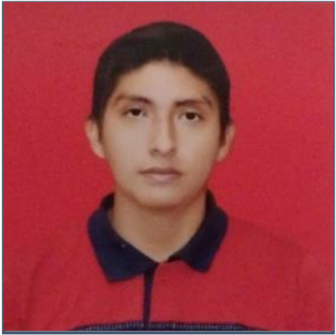

CURRICULUM VITAE
1. DATOS PERSONALES
-
NOMBRE: Christian Celso Mamani Soliz
-
FECHA DE NACIMIENTO: 04 de Enero del 2000
-
CARNET DE IDENTIDAD: 9821736 S.C.
-
NACIONALIDAD: Boliviana
-
ESTADO CIVIL: Soltero
-
OCUPACIÓN: Bachiller
-
DOMICILIO: Concepción – Santa Cruz - Bolivia
-
CELULAR: 63409229
-
E-MAIL: christiancelsomamanisoliz0@gmail.com
2. ESTUDIOS REALIZADOS
-
NIVEL SECUNDARIO:
Técnico Auxiliar en Computación – Centro Educativo Hans Roth Fe y Alegría
Colegio Guadalupe Fe y Alegría – Concepción – Santa Cruz - Bolivia
Bachiller en Humanidades 2017
-
NIVEL UNIVERSITARIO:
Estudiante de 9no Semestre de la carrera de Ingeniería Informática
3. OTROS ESTUDIOS REALIZADOS
-
IDIOMAS:
Español - Nivel Avanzado "Lengua Madre"
Inglés - Nivel Intermedio "UAGRM"
4. EXPERIENCIA DE TRABAJO
-
07/2023, DESARROLLADOR - Workcorp
-
01/2020, TIENDA Y COTILLÓN DAYANA - Atención al cliente
-
02/2019, VIOLONCHELISTA - Orquesta Sinfónica Universitaria
5. ASISTENCIA A CURSOS Y TALLERES
-
03/2023, CEPESS SANTA CRUZ - Capacitación en Mantenimiento y Reparación de computadoras
-
01/2022, UDEMY - Curso de Laravel con livewire
-
05/2022, APAC - Taller Orquestal de música renacentista y barroca
6. ASISTENCIA A OTROS CURSOS Y TALLERES
-
LARAVEL/PHP, NIVEL avanzado/Implementación de backend y frontend.
-
NODEJS/JAVASCRIPT, NIVEL intermedio/Implementación de backend
-
REACT NATIVE/JAVASCRIPT, NIVEL básico/Implementación de frontend
-
APACHE NETBEANS/JAVA, NIVEL básico/Implementación de frontend
-
POSTGRESQL/SQL, NIVEL básico/Implementación de frontend
-
MYSQL/SQL, NIVEL básico/Implementación de frontend
-
OFFICE, NIVEL intermedio/Manejo de programas Office
-
WINDOWS, NIVEL intermedio/Manejo de S.O. Windows
-
CABLE DE RED, NIVEL intermedio/Ponchado de cables de red
-
FIGMA, NIVEL intermedio/Prototipos de páginas
-
ENTERPRISE ARCHITECT, NIVEL intermedio/En diseños de diagramas
7. HABILIDADES
-
05/2021, UAGRM - Certificado Excel Financiero
8. REFERENCIAS LABORAL
-
Sra. Sonia Soliz – Cel: 77397729 – Dueña tienda y cotillón Dayana
-
Lic. Ramiro Majlluf – Cel: 60836791– Coordinador de Orquesta Sinfónica Universitaria
9. REFERENCIAS PERSONAL
-
Sr. Celso Mamani – Cel: 77620740 – "PADRE"
Liz Fernanda Reina Quispert
Dirección: Santa Cruz, Bolivia
Teléfono: 61504849
Correo Electrónico: lizreina.rq@gmail.com
Sobre Mi
Soy estudiante de último año de la carrera de Ingeniería Informática. Actualmente, estoy en búsqueda de mi primera experiencia laboral. Me considero una persona que le gusta aprender y desarrollar nuevas habilidades, además de participar en actividades extras, como lo es el programa Mujeres 360
Educación
Nombre de la Universidad: Universidad Gabriel Rene Moreno,Estudiante
Experiencia Laboral
Nombre de la Empresa: Beca Trabajo - UAGRM Pasante
Sistematización de currículos de docentes
Proyecto: Proyecto - Sistema de Comercio Electrónico para la venta de productos agrícolas
Sistema de información aplicando Framework Laravel con sistema gestor de base de datos PostgreSQL
Proyecto - Aplicación móvil microbuses
Proyecto para localizar las rutas de cada línea de micro
Proyecto- Sistema de Información para un Restaurante
Sistema de información web para la compra, venta e inventario de un restaurante en Laravel.
Habilidades
- Rápida resolución de problemas
- Trabajo en equipo
- Buena comunicación
- Rápida capacidad de aprendizaje
- Atención a los detalles
- Buena organización
- Conocimiento del marco de trabajo SCRUM
- Conocimiento de HTML y CSS
- Desarrollo de prototipos en Mokkit
- Lenguajes de programación: Java, C++, PHP
- Gestores de Base datos: MySQL, SQL Server,
- MongoDB, PostgreSQL
- Framework: Laravel
Idiomas
Ingles Basico